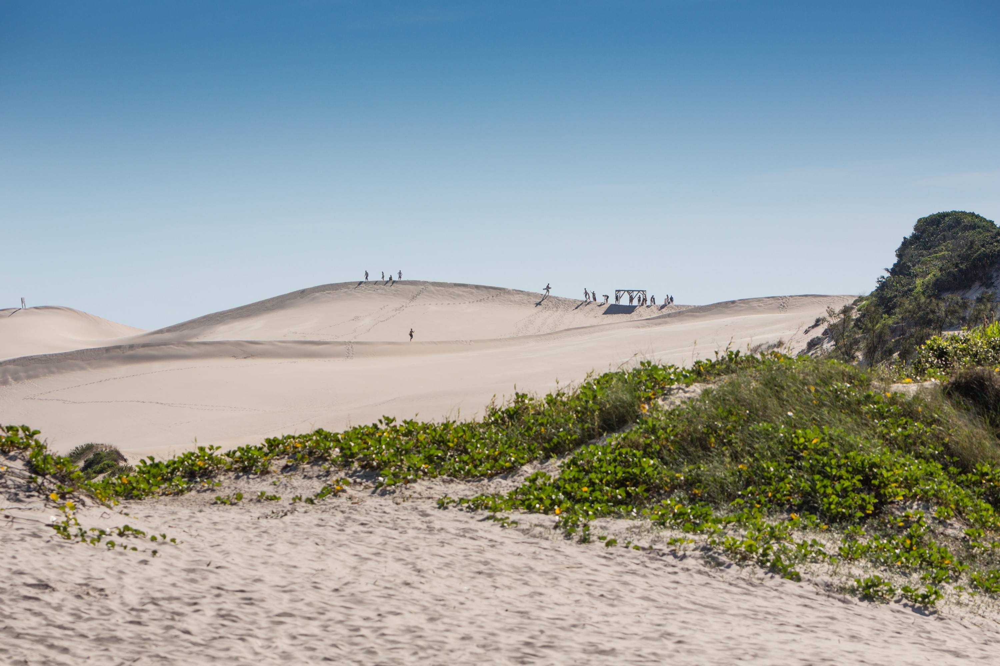
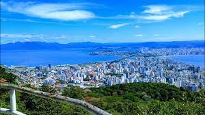
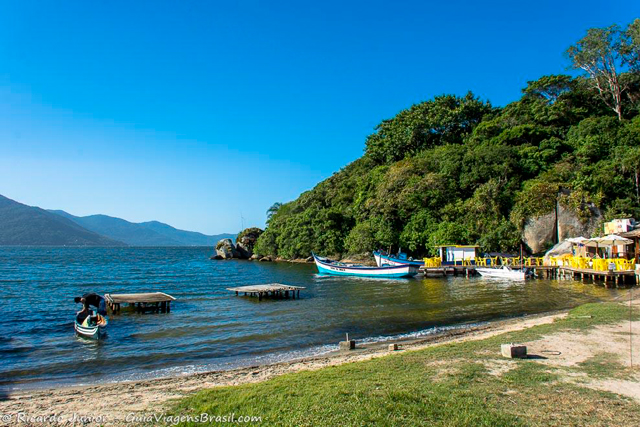

Floripa SC
Florianópolis, a capital do estado de Santa Catarina no sul do Brasil,
é maioritariamente constituída pela Ilha de Santa Catarina,

Sandboard Dunas Floripa SC
O sandboard é uma atividade famosa nestas dunas amplas com vistas panorâmicas para o mar.

Mirante do Morro da Cruz
, o Mirante do Morro da Cruz é um dos pontos turísticos mais famosos de Florianópolis. Apesar da falta de estrutura e do aspecto abandonado, a vista é um verdadeiro cartão postal que nos revela seu equilíbrio entre natureza e urbanização.

Lagoa da Conceição
Bairro privilegiado para quem quer comer em bons restaurantes ou cair na balada, a Lagoa da Conceição também rende um ótimo passeio durante o dia. Principalmente no fim da tarde, quando o calçadão da Avenida das Rendeiras fica concorrido entre os praticantes de atividade física.